Key Takeaways
- Takes the highest priority over other shell configuration methods.
- Overrides the default windows shell and allows administrators to configure a different shell program.
- Improves system efficiency by loading only essential shell features.
- Supports lightweight shell for better performance.
Hey, let’s learn about Simplify Windows Devices to Run Only the Required Applications using Intune. This policy lets administrators replace the default windows shell with a custom or lightweight shell. it improves performance by using system resources and is useful for devices that run a dedicated application. If the policy is disabled or not configured, windows use a default shell.
Table of Contents
What are the advantages of this policy?
The override shell program policy has the highest precedence over other ways of configuring the shell program. Advantages of override shell program policy are:
1. Provide a customized user experience with custom shell.
2. Enhances security by limiting access.
3. Overrides other shell settings, ensuring the configured shell always takes precedence.
4. Improves system performance.
Simplify Windows Devices to Run Only the Required Applications using Intune
Override shell program policy allows IT admin to configure the shell program for windows OS on a device. The policy currently supports not configured and apply lightweight shell options. Lightweight shell contains a limited set of features which could be consumed by applications. This configuration can be useful, if the device needs to have a continuous running user interface application. If the policy is disabled or not configured, then the default shell will be launched.
How to Create Override Shell Program Policy
You can easily create the Override Shell Program policy through Microsoft Intune Admin Center. Open the Microsoft Intune admin center, then go to Device>Configuration. Click on create and new policy for the override shell program policy creation.
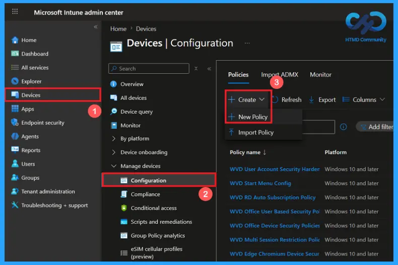
Profile Creation of Override Shell Program Policy
Choose new policy to open the profile creation window of a policy. Select platform as Windows 10 and later and profile type as settings catalog. After configuring these options, click on create button to continue the policy creation.
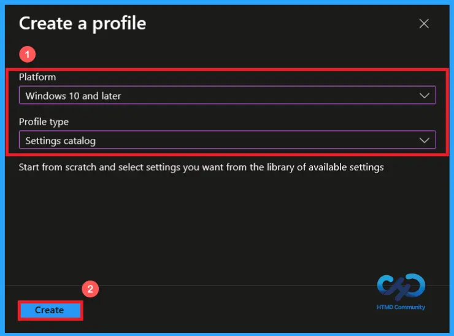
Create Basic Policy Information
Start by providing a clear and appropriate name for the policy. You can add description to explain the purpose of the policy if needed. Here, I given a clear name (Override shell program policy) and description (allow IT admin to configure the shell program for windows OS on a device). Then click on next to continue.
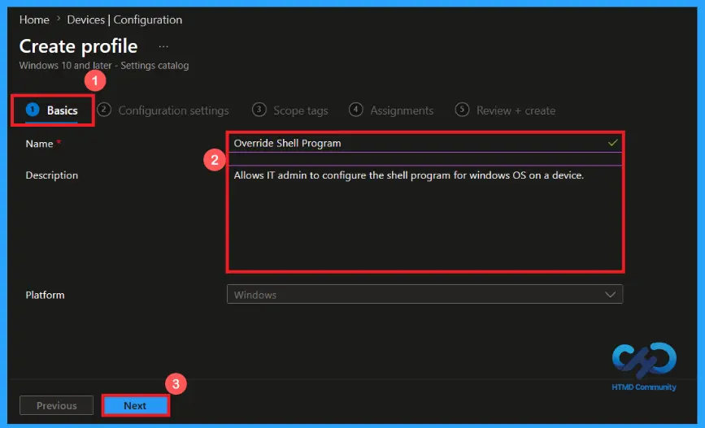
Configure Override Shell Program Settings
From the configuration settings page, click on add settings. A settings picker will open and search for windows logon category then select override shell program setting name. After selecting the appropriate setting, add it to the profile.
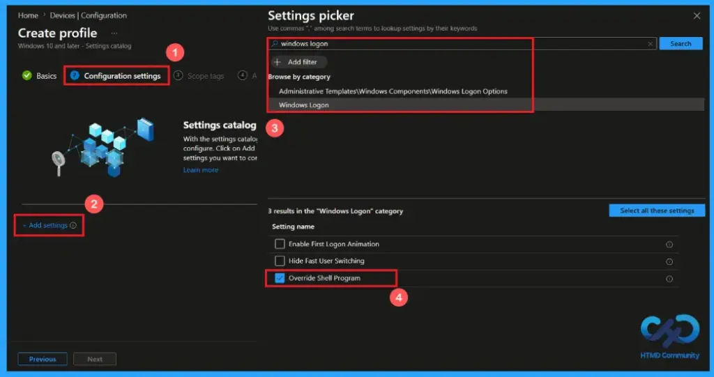
Override Shell Program Not Configured
Override shell program policy support not configured option as default. When the policy is set to not configured, windows use the default shell program. No custom or Lightweight shell is applied. The policy does not override any existing shell configuration.
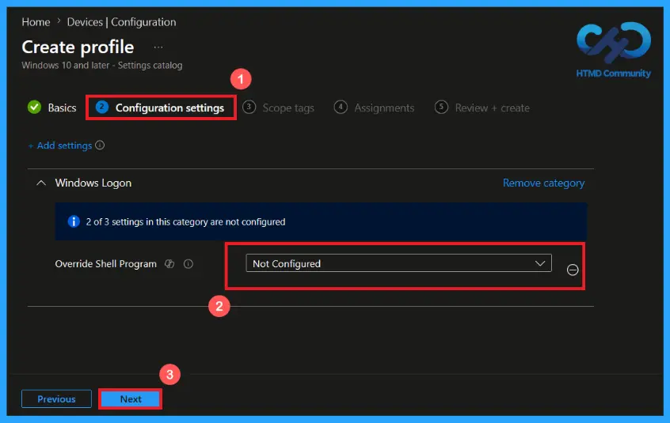
Apply Lightweight Shell Option
Applied Lightweight shell replaces the default windows shell with a minimal shell that uses fewer system resources. Normal windows desktop, taskbar, and start menu are not loaded and it is designed for devices that run a dedicated application continuously. After selecting the options, click next to continue.
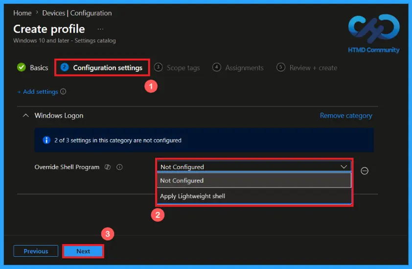
Scope tags allow admin to define which admin can view and manage the policy. Assigning scope tag is optional and does not affect the policy. You can add scope tag using select scope tags button. Here, I selected London as a scope tag. Then click on Next to continue.

Assign the Policy to Target Groups
The assignments section is used to choose the users or devices that will receive the policy. Add a group by clicking on the Add group button. Here, I selected the HTMD-Test Policy group. Review the assignment settings to ensure the correct targets are included and click Next to proceed with the policy deployment.
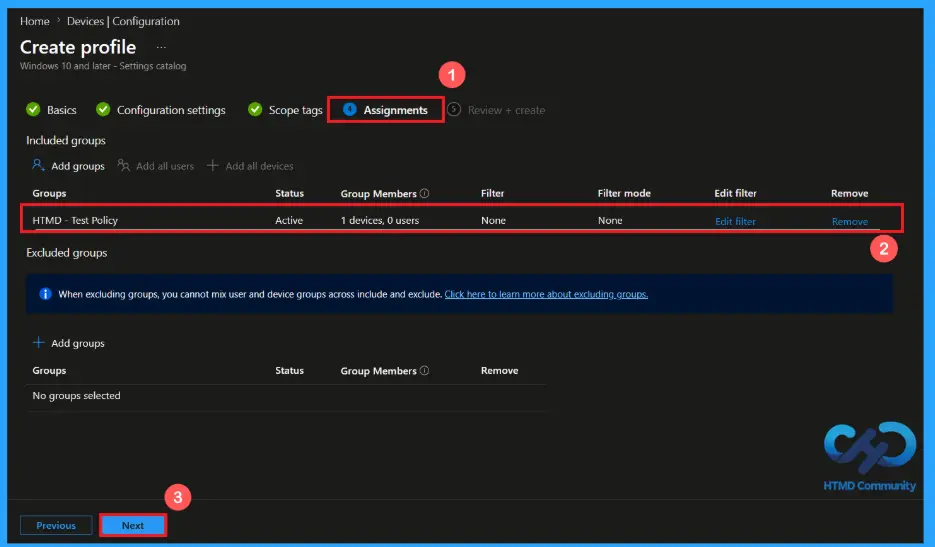
Review and Deploy the Policy
Before creating the policy, review all configured settings to ensure they match all the requirements. If any changes are needed, use the previous option to make changes. after verify everything, click create to deploy the policy. A confirm notification will appear on the screen, indicating that the policy for the override shell program has been created successfully.
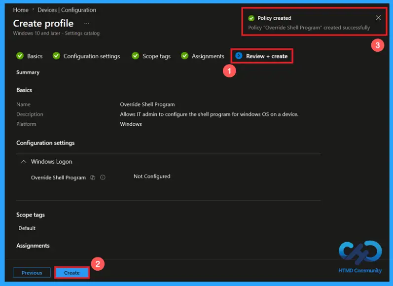
Device and User Check-in Status
After deploying the policy. Open the assigned configuration profile in Intune admin center and search for override shell program policy. Review the device and user check-in status and a succeeded status confirms that the policy has been successfully applied to the targeted devices. If status not updated use manual sync in the company portal and speed up the process.
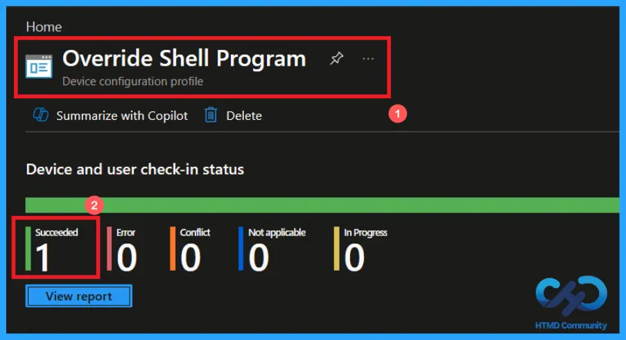
Client-side Verification of Override Shell Program Policy
To confirm that the policy has been applied successfully. Open Event Viewer and go to the Applications and Serviced Logs > Microsoft > Windows > Device Management Enterprise Diagnostics Provider > Admin. From the list of policies, use the filter current log option and search for Intune event ID 813.
MDM PolicyManager: Set policy int, Policy: (OverrideShellProgram), Area: (WindowsLogon),
EnrollmentID requesting merge: (EB427D85-802F-46D9-A3E2-D5B414587F63), Current User:
(Device), Int: (0x0), Enrollment Type: (0x6), Scope: (0x0).
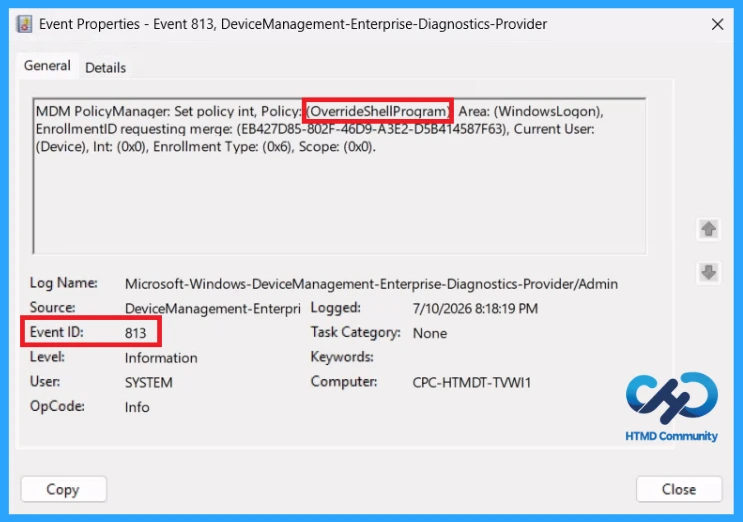
Windows Configuration Service Provider (CSP)
Windows Configuration Service Provider (CSP) defines how windows policies are applied and managed through modern device management solutions like Microsoft Intune. It specifies the supported settings, values, and group policy mapping for windows 10 and 11 devices.
Description framework properties: The following table shows the description framework properties of the override shell program policy.
| Property name | Property value |
|---|---|
| Format | int |
| Access Type | Add, Delete, Get, Replace |
| Default Value | 0 |
Allowed values: define the supported inputs that administrators can assign to a policy to control its behavior. Only these predefined values are accepted by the policy.
- 0 (Default) – Not Configured.
- 1 – Apply Lightweight shell.
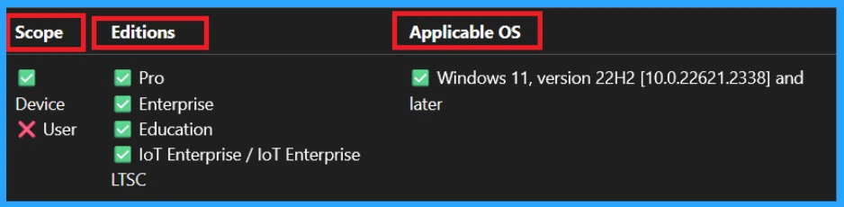
How to Remove the Assigned Group from the Override Shell Program Policy
You can remove the assignment from the Assignment section of the policy. Open the policy from configuration tab and click on the Edit button on the assignment tab. Then click on Remove button on the section to remove the policy. click Review + Save after making the change.
For detailed information, you can refer to our previous post – Learn How to Delete or Remove App Assignment from Intune using by Step-by-Step Guide.
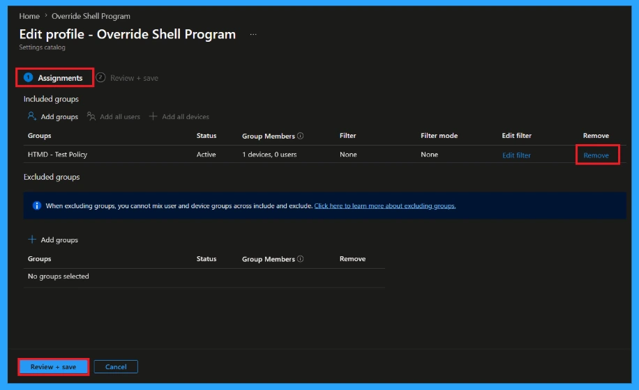
How to Delete the Override Shell Program Policy from Intune
To delete an Intune policy for security or another reasons, search for the Override Shell Program policy in the configuration section. After finding the policy name, click on the 3-dot menu next to it and tap the delete option. You can delete a policy for incorrect configuration, replacing, cleanup or avoid conflicts.
For detailed information, you can refer to our previous post – Learn How to Delete or Remove App Assignment from Intune using by Step-by-Step Guide.
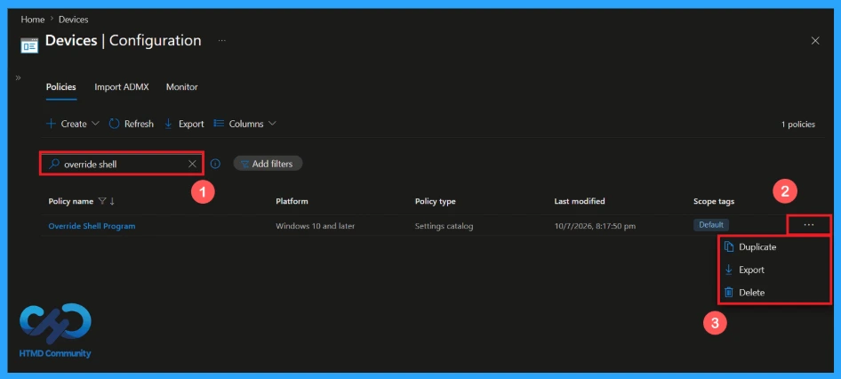
Need Further Assistance or Have Technical Questions?
Join the LinkedIn Page and Telegram group to get the latest step-by-step guides and news updates. Join our Meetup Page to participate in User group meetings. Also, Join the WhatsApp Community and WhatsApp Channel to get the latest news on Microsoft Technologies. We are there on Reddit as well.
Author
Anoop C Nair has been Microsoft MVP from 2015 onwards for 10 consecutive years! He is a Workplace Solution Architect with more than 22+ years of experience in Workplace technologies. He is also a Blogger, Speaker, and Local User Group Community leader. His primary focus is on Device Management technologies like SCCM and Intune. He writes about technologies like Intune, SCCM, Windows,
Cloud PC, Windows, Entra, Microsoft Security, Career, etc